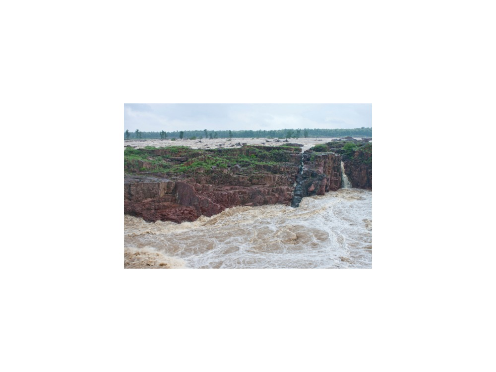
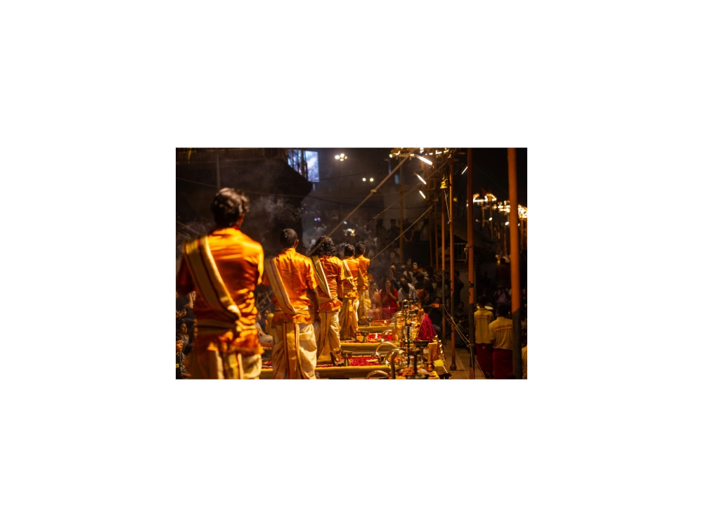
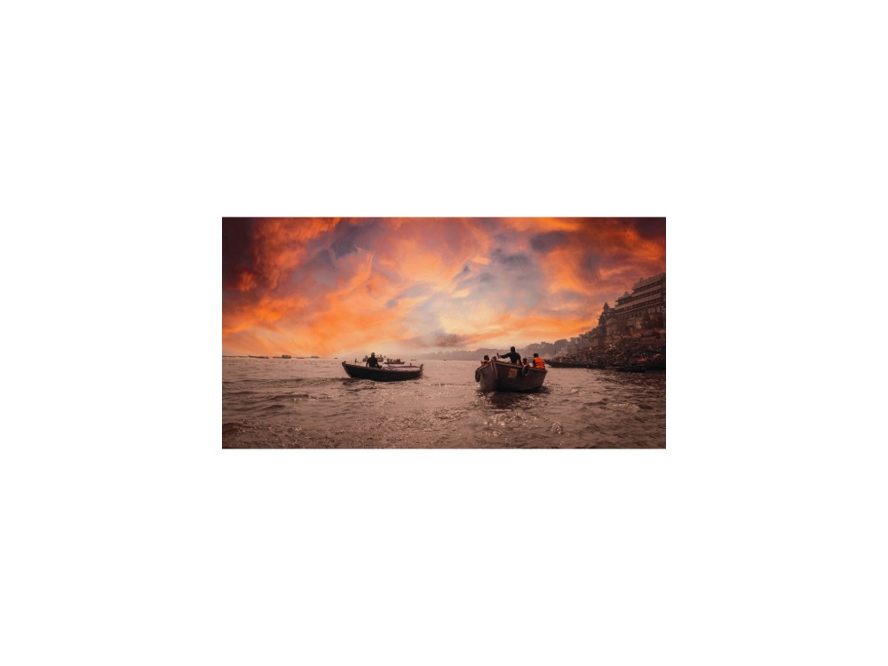
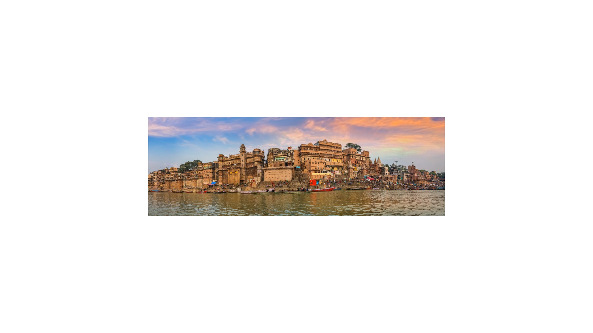

4 дня: Каджурахо и Варанаси — храмы, тигры и священный Ганг
Дели · Каджурахо · Панна · Варанаси · Сарнатх
О путешествии
Храмы Каджурахо, сафари в Панне и Ганг в Варанаси: от скульптуры до ритуала за четыре дня.
Насыщенные дни с несколькими длинными переездами. Подходит энергичным путешественникам.
Главное
- Храмовый комплекс Каджурахо (ЮНЕСКО)
- Утреннее сафари в заповеднике Панна и каньон водопадов Ранех
- Вечерняя Ганга-арти, рассветная лодка и Олений парк в Сарнатхе
Маршрут и программа по дням
Схематичный маршрут, не в масштабе.
День 1Из Дели в Каджурахо: храмы
Утренний перелёт из Дели в Каджурахо. Экскурсия по Западной группе храмов (ЮНЕСКО). Ночь в Каджурахо.
День 2Тигровое сафари в Панне и водопады Ранех
Утреннее джип-сафари в тигровом заповеднике Панна. Поездка к каньону водопадов Ранех. Ночь в Каджурахо.
День 3Из Каджурахо в Варанаси и вечерняя арти
Перелёт в Варанаси (авиабилеты не включены). Прямых рейсов Каджурахо — Варанаси немного, поэтому маршрут нужно уточнить; возможна пересадка в Дели. Заселение в отель; вечерняя Ганга-арти на гхате Дашашвамедх. Ночь в Варанаси.
День 4Рассветная лодка, Сарнатх и возвращение в Дели
Лодка на рассвете вдоль гхатов Варанаси. Поездка в Сарнатх (ступа Дхамек, Археологический музей со Львиной капителью Ашоки). Перелёт обратно в Дели (авиабилет не включён).
Лучшее время для поездки
Лучшее Возможно Нежелательно
Лучшее время: окт–мар. Также подходит: апр, сен.
Октябрь — март — самый комфортный сезон: тёплые дни и прохладные утра. В декабре и январе возможны туманы и холод на рассвете. С апреля по июнь очень жарко: мы начинаем рано и отдыхаем в полдень. С июля по сентябрь — влажный сезон дождей и меньше туристов. Зоны сафари в Панне обычно закрыты на сезон дождей.
Что включено
Включено
- Частный автомобиль с кондиционером и водителем
- Лицензированный гид (русский или английский)
- Входные билеты в памятники
- Джип-сафари
Не включено
- Авиабилеты
- Отели (подбираются в выбранной вами категории; цена по запросу)
- Питание, если не указано
- Чаевые и личные расходы
- Туристическая страховка
Ориентировочно; точный состав подтверждается в вашем персональном расчёте.
Места этого маршрута
Часть страниц памятников пока на английском языке.
Храмы Каджурахо (Кандарья-Махадева) Тигровый заповедник Панна
Тигровый заповедник Панна
Водопады Ранех
Ганга-арти
Рассветная лодка по Гангу
Гхат Дашашвамедх Ступа Дхамек в Сарнатхе
Ступа Дхамек в СарнатхеВопросы
Это частное путешествие?
Да. Каждое путешествие — только для вас и ваших спутников, с личным гидом, автомобилем и водителем. Никаких групп и сборных туров.
Можно ли изменить маршрут?
Да. Эта программа — отправная точка. Расскажите об интересах, темпе и датах, и я скорректирую маршрут до расчёта стоимости.
На каких языках проводятся туры?
Викрамджит проводит экскурсии на русском и английском.
Насколько тур физически сложный?
Насыщенные дни с несколькими длинными переездами. Подходит энергичным путешественникам. Оценка темпа: быстрый темп.
Как забронировать и когда я узнаю цену?
Отправьте запрос с датами. В течение 24 часов вы получите персональную программу и расчёт стоимости.
Темы
Духовность и многоконфессиональность Маршрут Всемирного наследия ЮНЕСКО Дикая природа и эко-сафари
Направления
Похожие путешествия
 1 день
1 деньОднодневный частный тур из Дели: Тадж-Махал и форт Агры
Утренний свет на Тадж-Махале и красные дворики форта Агры за один частный день из Дели — с личным гидом и автомобилем.
Подробнее → 1 день
1 деньДели за один день: имперская столица и духовное наследие
Старый Дели, могольские мавзолеи и святыни трёх религий — в вашем темпе за один частный день.
Подробнее → 1 день
1 деньДжайпур за один день: частный королевский экспресс из Дели
Форт Амбер, Городской дворец и главные места Розового города за один долгий день из Дели — для тех, у кого есть всего один день.
Подробнее →